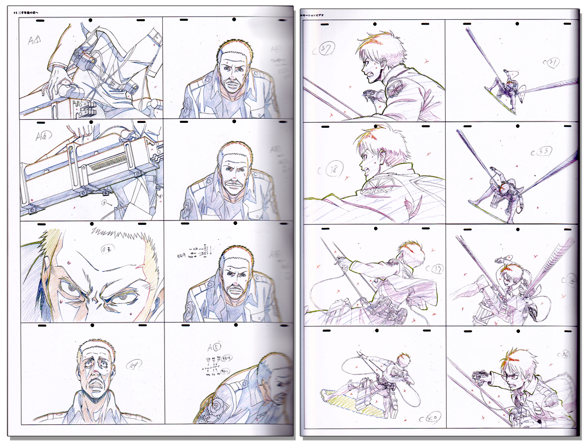

With the rise of anime, people are constantly registering to services where they can watch anime. As of 2021, Crunchyroll, a streaming service, has over 90 million registered users with 4 million of those people actually paying for a subscription. Just imagine how many more people are using other anime streaming service such as Funimation and VRV! The popularity of anime has sparked since it was first introduced. There are many reasons why people watch anime. For example, people take interest in anime because of the great art style and music that is implemented, the voice acting and history of the characters, the compelling story, the fan base, and more. Yet how did the popularity in anime rise? Where did it all begin? Let us look back into the past to examine this!
Anime, pronounced "a-nuh-mei", is a word derived from "animation". This word is utilized by Japanese people to refer to any animated drawing. For those who speak English, it is mainly used to refer to a Japanese animation. Now, how did anime begin? To answer this question, one must look a century back at Japan, the birthplace of anime. The earliest examples of Japanese animation trace back to 1917. Oten Shimokawa, Jun’ichi Kouchi, and Seitaro Kitayama were the "fathers" of anime. They intially made a story using chalk and a board. The drawings were erased and re-drawn to illustrate a new image. These type of drawings did not use cels, a transparent sheet on which objects are drawn or painted for traditional, hand-drawn animations. The creators stood by the drawing and narrated the film which influened the creation of anime. In 1934, Kenzo Masaoka, the creator of the anime, Phoenix, used cels for the first time which revolutionized how artists create characters. With the inevitable development of technology, anime was shown on live television in 1961 and eventually reached America. The use of VHS sparked an interest in anime and entering the 2000's, people began to use CGI which is the type of anime that currently exists. Yet how is the current anime of today's world created?
The Creation Of Anime: A Long, Rigorous Task
 As viewers of anime, some of us generally do not question how it is made. We watch anime without realizing the long tasks the creators need to tackle. First, the creators must create a story. Without a story, you have nothing! Stories must be converted into a script suitable for the anime medium. These include episode length, story pacing, and more. After creating a story, the creators will start on the anime's pre-production phase. In the pre-production phase, the creators need a financial estimate to begin production. They must also have the proper licensing of story rights, hire the best voice actors, and decide on project deadlines. Directors are the creative leaders during this phase. The next task is to develop the storyboards, which includes scripts, scenes, and dialogue. A storyboard involves sketches and camera angles. After doing so, these storyboards are given to the team's animators, who are in charge of drawing the scenes within the storyboards frame by frame. It takes around 24 drawings or frames for each second of animation! These drawings eventually are tossed into a digital animation software, where scenes are animated with color and CGI elements are implemented. Finally, the most important thing is to give voice to the characters via voice acting. Aside from characters, sound effects from the enviroment and music tracks need to be made! Now that you understand how anime is created, just imagine how many hours are invested for each scene and episode! Creators go through this process several times.